CODING AGENTS AS PIXEL WORLD MODELS
traex/DeepSeek-V4.1-Flash · 0128
点击播放 · 原生 RGB 像素
逐轮保存的候选
回放视频、检查图与代码变化。
每份候选均可单独播放。实际图片检查记录在下方工具轨迹中。
候选 01播放与检查图
点击播放 · 原生 RGB 像素
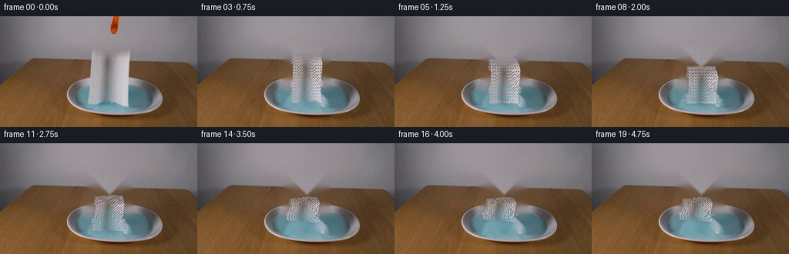
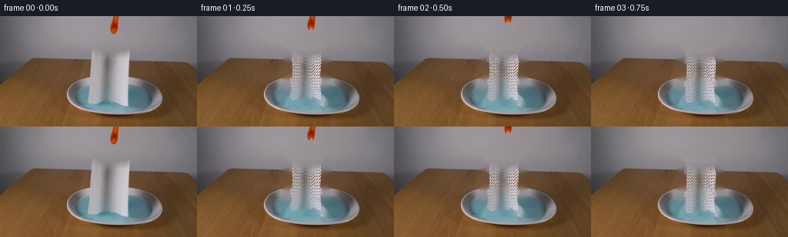
展开代码变化
--- 上一保存版本
+++ 本次保存版本
@@ -0,0 +1,310 @@
+from pathlib import Path
+
+import cv2
+import numpy as np
+from PIL import Image
+
+import artifact_io
+
+
+CASE_DIR = Path(__file__).resolve().parent
+W, H = 256, 144
+N, FPS = 20, 4
+
+
+def smoothstep(a, b, x):
+ t = np.clip((x - a) / (b - a), 0.0, 1.0)
+ return t * t * (3.0 - 2.0 * t)
+
+
+def make_background(source):
+ """Remove the gripper and suspended sheet, then restore their surroundings."""
+ image = source.copy()
+
+ # The gripper hangs against a smooth, nearly horizontal wall gradient.
+ for y in range(0, 38):
+ left = image[y, 134].astype(np.float32)
+ right = image[y, 164].astype(np.float32)
+ for x in range(134, 164):
+ t = (x - 134) / 29.0
+ image[y, x] = np.round(left * (1 - t) + right * t).astype(np.uint8)
+
+ # A modest mask keeps the inpainted towel region from reaching the plate rim.
+ mask = np.zeros((H, W), np.uint8)
+ polygon = np.array(
+ [[113, 36], [171, 36], [173, 83], [176, 108], [171, 116],
+ [161, 114], [151, 117], [142, 112], [132, 117], [121, 113],
+ [111, 116], [108, 103], [111, 82]],
+ np.int32,
+ )
+ cv2.fillPoly(mask, [polygon], 255)
+ mask = cv2.dilate(mask, np.ones((3, 3), np.uint8), iterations=1)
+ restored = cv2.inpaint(cv2.cvtColor(image, cv2.COLOR_RGB2BGR), mask, 3, cv2.INPAINT_TELEA)
+ restored = cv2.cvtColor(restored, cv2.COLOR_BGR2RGB)
+
+ # Rebuild the bright front lip of the dish, which is mostly hidden by the towel.
+ for y in range(104, 124):
+ q = (y - 104) / 19.0
+ half = 58 + 9 * np.sin(np.pi * np.clip(q, 0, 1))
+ for x in range(int(142 - half), int(143 + half)):
+ if 105 <= x <= 178:
+ continue
+ # Preserve the real rim where it was visible.
+ if mask[y, x] == 0:
+ continue
+ t = abs(x - 142) / max(half, 1)
+ brightness = 206 - 65 * q - 18 * t * t
+ restored[y, x] = np.array(
+ [brightness + 3, brightness, brightness + 2], dtype=np.uint8
+ )
+
+ # Keep the known scene outside the repaired area untouched.
+ out = image.copy()
+ out[mask > 0] = restored[mask > 0]
+ return out, mask
+
+
+def extract_sheet(source):
+ x0, x1, y0, y1 = 108, 178, 35, 117
+ crop = source[y0:y1, x0:x1].copy()
+ h, w = crop.shape[:2]
+ yy, xx = np.mgrid[y0:y1, x0:x1]
+
+ # Boundary of the hanging sheet in the reference image.
+ left = np.interp(yy, [35, 39, 60, 82, 104, 116], [116, 116, 114, 113, 114, 120])
+ right = np.interp(yy, [35, 39, 60, 82, 104, 116], [166, 166, 169, 170, 170, 166])
+ bottom = np.interp(xx, [113, 122, 132, 142, 153, 164, 172],
+ [110, 113, 108, 114, 108, 112, 109])
+ inside = (xx >= left) & (xx <= right) & (yy >= 39) & (yy <= bottom)
+
+ rgb = crop.astype(np.float32)
+ chroma = rgb.max(axis=2) - rgb.min(axis=2)
+ paperish = (chroma < 36) & (rgb.mean(axis=2) > 68)
+ alpha = inside & paperish
+ alpha = cv2.morphologyEx(alpha.astype(np.uint8), cv2.MORPH_CLOSE, np.ones((3, 3), np.uint8))
+ alpha = cv2.GaussianBlur(alpha.astype(np.float32), (3, 3), 0.55)
+ alpha = np.clip((alpha - 0.14) / 0.86, 0, 1)
+
+ # Remove accidental blue spill from the lowest wet edge.
+ blue_spill = (rgb[:, :, 2] - rgb[:, :, 0] > 16) & (yy > 103)
+ alpha[blue_spill] *= 0.55
+ return crop, alpha.astype(np.float32)
+
+
+def sample_sheet(crop, alpha, mesh_u, mesh_v):
+ """Rasterize a rectangular paper texture onto an arbitrary quad mesh."""
+ ch, cw = crop.shape[:2]
+ canvas = np.zeros((H, W, 3), np.float32)
+ coverage = np.zeros((H, W), np.float32)
+ nu, nv = mesh_u.shape[1] - 1, mesh_u.shape[0] - 1
+
+ for j in range(nv):
+ for i in range(nu):
+ src = np.array(
+ [
+ [i / nu * (cw - 1), j / nv * (ch - 1)],
+ [(i + 1) / nu * (cw - 1), j / nv * (ch - 1)],
+ [i / nu * (cw - 1), (j + 1) / nv * (ch - 1)],
+ [(i + 1) / nu * (cw - 1), (j + 1) / nv * (ch - 1)],
+ ],
+ np.float32,
+ )
+ dst = np.array(
+ [
+ [mesh_u[j, i], mesh_v[j, i]],
+ [mesh_u[j, i + 1], mesh_v[j, i + 1]],
+ [mesh_u[j + 1, i], mesh_v[j + 1, i]],
+ [mesh_u[j + 1, i + 1], mesh_v[j + 1, i + 1]],
+ ],
+ np.float32,
+ )
+ for tri in ((0, 1, 2), (1, 3, 2)):
+ s = src[list(tri)]
+ d = dst[list(tri)]
+ if abs(cv2.contourArea(d.astype(np.float32))) < 0.1:
+ continue
+ transform = cv2.getAffineTransform(s, d)
+ warped = cv2.warpAffine(
+ crop, transform, (W, H), flags=cv2.INTER_LINEAR,
+ borderMode=cv2.BORDER_REFLECT_101,
+ ).astype(np.float32)
+ warped_a = cv2.warpAffine(
+ alpha, transform, (W, H), flags=cv2.INTER_LINEAR,
+ borderMode=cv2.BORDER_CONSTANT, borderValue=0,
+ )
+ tri_mask = np.zeros((H, W), np.uint8)
+ cv2.fillConvexPoly(tri_mask, np.round(d).astype(np.int32), 255)
+ tri_mask = cv2.erode(tri_mask, np.ones((2, 2), np.uint8))
+ take = (tri_mask > 0) & (warped_a > coverage)
+ canvas[take] = warped[take]
+ coverage[take] = warped_a[take]
+ return canvas, coverage
+
+
+def sheet_mesh(frame, source_alpha_shape):
+ """Return a mesh for a light paper sheet falling and then crumpling."""
+ t = frame / (N - 1)
+ nu, nv = 16, 18
+ u = np.linspace(0, 1, nu + 1)
+ v = np.linspace(0, 1, nv + 1)
+ U, V = np.meshgrid(u, v)
+
+ # Vertical travel: a quick release followed by a softer landing.
+ drop = 1.2 + 4.0 * smoothstep(0.04, 0.27, t) + 17.0 * smoothstep(0.10, 0.46, t)
+ settle = smoothstep(0.30, 0.82, t)
+ collapse = smoothstep(0.34, 0.78, t)
+
+ y_top = 38.5 + drop + 8.0 * settle
+ height = 73.0 * (1.0 - 0.55 * collapse) + 4.0 * np.sin(np.pi * settle)
+
+ # The sheet bends and twists as it loses support, then relaxes across the liquid.
+ sway = (2.4 * np.sin(1.25 * np.pi * t + 0.15) * smoothstep(0.08, 0.55, t)
+ - 4.8 * collapse)
+ center = 142.0 + sway + (V - 0.5) * (2.2 * np.sin(1.7 * np.pi * t) * (1 - collapse))
+ center += 1.2 * np.sin(2.0 * np.pi * V + 0.6) * settle
+
+ width_top = 50.0 * (1.0 - 0.05 * collapse)
+ width_bottom = 55.0 + 12.0 * settle - 4.0 * collapse
+ width = (width_top + (width_bottom - width_top) * V)
+ width *= 1.0 + 0.035 * np.sin(2.0 * np.pi * (1.25 * V + 0.15 * t))
+
+ # A few broad folds are strongest during the fall and fade after landing.
+ fold_amp = 2.0 * np.sin(np.pi * np.clip((t - 0.06) / 0.45, 0, 1)) + 0.8 * settle
+ fold = fold_amp * np.sin(2.0 * np.pi * (1.15 * V - 0.22 * U + 0.10 * t))
+ x = center + (U - 0.5) * width + fold * (0.25 + 0.75 * U)
+
+ # Compression is uneven: the lower half buckles first.
+ buckle = (5.5 * collapse * np.sin(np.pi * V) * np.cos(np.pi * (U - 0.5)))
+ y = y_top + V * height + buckle
+ y += 1.4 * settle * np.sin(2.0 * np.pi * (U + 0.4 * V) + 0.8)
+
+ # Slight perspective and asymmetric edge curling.
+ x += (V ** 2) * (3.0 * collapse + 1.4 * np.sin(1.4 * np.pi * t) * (1 - collapse))
+ x += (U - 0.5) ** 2 * 1.8 * collapse
+
+ # Keep the cloth within the bowl after it has fallen.
+ x = np.clip(x, 103, 184)
+ y = np.clip(y, 28, 113)
+ return x.astype(np.float32), y.astype(np.float32)
+
+
+def liquid_mask(source):
+ rgb = source.astype(np.float32)
+ yy, xx = np.mgrid[0:H, 0:W]
+ blue = (rgb[:, :, 2] - rgb[:, :, 0] > 12) & (rgb[:, :, 1] > 82)
+ bowl = ((xx - 143.0) / 69.0) ** 2 + ((yy - 105.0) / 18.0) ** 2 < 1.0
+ mask = blue & bowl & (yy > 87)
+ mask = cv2.morphologyEx(mask.astype(np.uint8), cv2.MORPH_CLOSE, np.ones((5, 5), np.uint8))
+ mask = cv2.GaussianBlur(mask.astype(np.float32), (5, 5), 1.2)
+ return mask
+
+
+def add_liquid_effects(image, sheet_coverage, base, frame):
+ t = frame / (N - 1)
+ yy, xx = np.mgrid[0:H, 0:W]
+ water = liquid_mask(base)
+ submerged = water * sheet_coverage * smoothstep(0.12, 0.42, t)
+ blue = np.array([86.0, 154.0, 170.0], np.float32)
+ image = image.astype(np.float32)
+ image = image * (1 - 0.22 * submerged[..., None]) + blue * (0.22 * submerged[..., None])
+
+ # Contact rings spread from the sheet edges after the lower edge meets the water.
+ strength = smoothstep(0.12, 0.30, t) * (1 - smoothstep(0.65, 1.0, t))
+ if strength > 0:
+ overlay = image.copy()
+ for k, radius in enumerate((5, 9, 14, 20)):
+ phase = np.clip((t - 0.12) * 7.0 - k * 0.48, 0, 1)
+ if phase <= 0 or phase >= 1:
+ continue
+ rx = radius + 11 * phase
+ ry = 1.7 + 3.0 * phase
+ alpha = 0.38 * strength * np.sin(np.pi * phase)
+ cv2.ellipse(
+ overlay, (143, 108), (int(rx), int(ry)), 0, 8, 172,
+ (210, 225, 224), 1, cv2.LINE_AA,
+ )
+ image = image * (1 - alpha) + overlay * alpha
+ overlay = image.copy()
+
+ # Subtle specular shimmer across the exposed liquid.
+ shimmer = (np.sin(xx * 0.23 + frame * 0.38) + np.sin(xx * 0.09 - yy * 0.31 + frame * 0.22))
+ shimmer = np.clip(shimmer, -1.0, 1.0) * water * 2.0
+ image += shimmer[..., None] * np.array([0.35, 0.55, 0.60], np.float32)
+ return np.clip(image, 0, 255).astype(np.uint8)
+
+
+def render_frames(source):
+ background, removal_mask = make_background(source)
+ crop, alpha = extract_sheet(source)
+ water = liquid_mask(background)
+
+ frames = []
+ for index in range(N):
+ if index == 0:
+ frames.append(source.copy())
+ continue
+
+ image = background.copy()
+ if index > 0:
+ mesh_x, mesh_y = sheet_mesh(index, alpha.shape)
+ paper, coverage = sample_sheet(crop, alpha, mesh_x, mesh_y)
+
+ # A soft contact shadow anchors the paper on the liquid.
+ t = index / (N - 1)
+ shadow_strength = 0.22 * smoothstep(0.12, 0.40, t)
+ if shadow_strength > 0:
+ shadow = cv2.GaussianBlur(coverage, (0, 0), 3.2)
+ image = image.astype(np.float32)
+ image *= 1.0 - shadow_strength * shadow[..., None]
+ image = np.clip(image, 0, 255).astype(np.uint8)
+
+ comp = paper * coverage[..., None] + image * (1 - coverage[..., None])
+ image = np.clip(comp, 0, 255).astype(np.uint8)
+ image = add_liquid_effects(image, coverage, background, index)
+
+ # Very light temporal grain makes the flat source texture feel filmed.
+ rng = np.random.default_rng(1000 + index)
+ grain = rng.normal(0.0, 0.55, (H, W, 1)).repeat(3, axis=2)
+ image = np.clip(image.astype(np.float32) + grain, 0, 255).astype(np.uint8)
+
+ # The gripper opens on release, then exits the top of frame.
+ if index <= 2:
+ shift = (0, -4, -13)[index]
+ gripper_mask = np.zeros((H, W), np.uint8)
+ cv2.fillPoly(
+ gripper_mask,
+ [np.array([[134, 0], [163, 0], [163, 29], [153, 31], [151, 24],
+ [149, 17], [142, 24], [138, 14]], np.int32)],
+ 255,
+ )
+ src_y0, src_y1 = max(0, -shift), min(H, H - shift)
+ dst_y0, dst_y1 = src_y0 + shift, src_y1 + shift
+ if dst_y1 > 0 and dst_y0 < H:
+ ys0, ys1 = max(0, src_y0), min(H, src_y1)
+ yd0, yd1 = ys0 + shift, ys1 + shift
+ valid = (gripper_mask[ys0:ys1] > 0) & (yd0 + (ys1 - ys0) <= H) & (yd0 >= 0)
+ # Use the exact source gripper pixels where possible.
+ for y in range(max(0, yd0), min(H, yd1)):
+ sy = y - shift
+ take = gripper_mask[sy] > 0
+ image[y, take] = source[sy, take]
+
+ frames.append(image)
+
+ return np.stack(frames).astype(np.uint8), background, crop, alpha
+
+
+def main():
+ source = np.array(Image.open(CASE_DIR / "first_frame.png").convert("RGB"))
+ frames, background, crop, alpha = render_frames(source)
+ assert frames.shape == (N, H, W, 3) and frames.dtype == np.uint8
+ assert np.array_equal(frames[0], source)
+
+ Image.fromarray(background).save(CASE_DIR / ".tmp" / "clean_plate.png")
+ Image.fromarray(crop).save(CASE_DIR / ".tmp" / "sheet_texture.png")
+ Image.fromarray(np.round(alpha * 255).astype(np.uint8)).save(CASE_DIR / ".tmp" / "sheet_alpha.png")
+ artifact_io.save(frames, CASE_DIR)
+
+
+if __name__ == "__main__":
+ main()
候选 02播放与检查图
点击播放 · 原生 RGB 像素

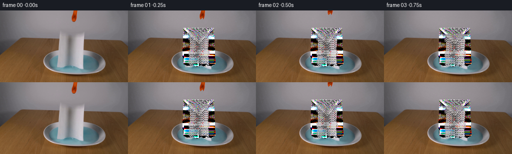
展开代码变化
--- 上一保存版本
+++ 本次保存版本
@@ -18,7 +18,7 @@
def make_background(source):
- """Remove the gripper and suspended sheet, then restore their surroundings."""
+ """Remove the gripper and suspended sheet while preserving the dish."""
image = source.copy()
# The gripper hangs against a smooth, nearly horizontal wall gradient.
@@ -29,12 +29,12 @@
t = (x - 134) / 29.0
image[y, x] = np.round(left * (1 - t) + right * t).astype(np.uint8)
- # A modest mask keeps the inpainted towel region from reaching the plate rim.
+ # The dish was fully visible behind the sheet, apart from this compact zone.
mask = np.zeros((H, W), np.uint8)
polygon = np.array(
- [[113, 36], [171, 36], [173, 83], [176, 108], [171, 116],
- [161, 114], [151, 117], [142, 112], [132, 117], [121, 113],
- [111, 116], [108, 103], [111, 82]],
+ [[112, 36], [170, 36], [172, 87], [173, 105], [167, 110],
+ [160, 108], [153, 111], [145, 107], [137, 111], [129, 107],
+ [121, 110], [112, 106], [110, 88]],
np.int32,
)
cv2.fillPoly(mask, [polygon], 255)
@@ -42,25 +42,31 @@
restored = cv2.inpaint(cv2.cvtColor(image, cv2.COLOR_RGB2BGR), mask, 3, cv2.INPAINT_TELEA)
restored = cv2.cvtColor(restored, cv2.COLOR_BGR2RGB)
- # Rebuild the bright front lip of the dish, which is mostly hidden by the towel.
- for y in range(104, 124):
- q = (y - 104) / 19.0
- half = 58 + 9 * np.sin(np.pi * np.clip(q, 0, 1))
- for x in range(int(142 - half), int(143 + half)):
- if 105 <= x <= 178:
+ # Restore the water/rim texture using mirrored horizontal samples from the
+ # same visible liquid band, then softly blend the repaired strip.
+ repaired = restored.copy()
+ for y in range(87, 112):
+ xs = np.flatnonzero(mask[y])
+ if not len(xs):
+ continue
+ left = max(82, int(xs.min()) - 4)
+ right = min(205, int(xs.max()) + 4)
+ for x in range(left, right + 1):
+ if not mask[y, x]:
continue
- # Preserve the real rim where it was visible.
- if mask[y, x] == 0:
- continue
- t = abs(x - 142) / max(half, 1)
- brightness = 206 - 65 * q - 18 * t * t
- restored[y, x] = np.array(
- [brightness + 3, brightness, brightness + 2], dtype=np.uint8
- )
-
- # Keep the known scene outside the repaired area untouched.
+ mirror = 285 - x
+ if 78 <= mirror < 210 and not mask[y, mirror]:
+ repaired[y, x] = image[y, mirror]
+ else:
+ # Extend the nearby liquid row without flattening its color.
+ nearest = left - 1 if x < 142 else right + 1
+ repaired[y, x] = image[y, np.clip(nearest, 0, W - 1)]
+ blur = cv2.GaussianBlur(repaired, (0, 0), 2.2)
+ feather = cv2.GaussianBlur(mask.astype(np.float32), (0, 0), 1.5)[..., None]
+ repaired = repaired.astype(np.float32) * feather + blur.astype(np.float32) * (1 - feather)
+
out = image.copy()
- out[mask > 0] = restored[mask > 0]
+ out[mask > 0] = np.clip(repaired[mask > 0], 0, 255).astype(np.uint8)
return out, mask
@@ -82,8 +88,13 @@
paperish = (chroma < 36) & (rgb.mean(axis=2) > 68)
alpha = inside & paperish
alpha = cv2.morphologyEx(alpha.astype(np.uint8), cv2.MORPH_CLOSE, np.ones((3, 3), np.uint8))
- alpha = cv2.GaussianBlur(alpha.astype(np.float32), (3, 3), 0.55)
- alpha = np.clip((alpha - 0.14) / 0.86, 0, 1)
+ # Close small holes in the matte, especially near the gripper.
+ alpha = cv2.morphologyEx(alpha.astype(np.uint8), cv2.MORPH_CLOSE, np.ones((5, 5), np.uint8))
+ alpha = cv2.GaussianBlur(alpha.astype(np.float32), (3, 3), 0.5)
+ alpha = np.clip((alpha - 0.10) / 0.90, 0, 1)
+ # The sheet is physically continuous across its top edge.
+ top = np.interp(xx, [114, 130, 148, 165], [40, 39, 39, 40])
+ alpha = np.where((yy >= top) & (yy < 45), np.maximum(alpha, 1.0), alpha)
# Remove accidental blue spill from the lowest wet edge.
blue_spill = (rgb[:, :, 2] - rgb[:, :, 0] > 16) & (yy > 103)
候选 03播放与检查图
点击播放 · 原生 RGB 像素
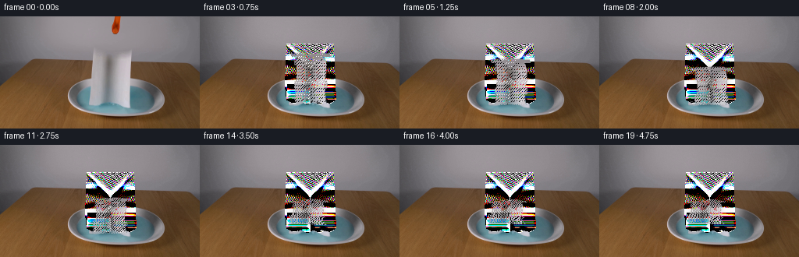
展开代码变化
--- 上一保存版本
+++ 本次保存版本
@@ -21,52 +21,64 @@
"""Remove the gripper and suspended sheet while preserving the dish."""
image = source.copy()
- # The gripper hangs against a smooth, nearly horizontal wall gradient.
- for y in range(0, 38):
- left = image[y, 134].astype(np.float32)
- right = image[y, 164].astype(np.float32)
- for x in range(134, 164):
- t = (x - 134) / 29.0
- image[y, x] = np.round(left * (1 - t) + right * t).astype(np.uint8)
-
- # The dish was fully visible behind the sheet, apart from this compact zone.
+ # Gripper removal: the wall behind it is a smooth vertical gradient.
+ grip_mask = np.zeros((H, W), np.uint8)
+ grip_mask[0:34, 131:166] = 255
+ grip_mask = cv2.GaussianBlur(grip_mask, (5, 5), 1.0)
+ wall = cv2.inpaint(cv2.cvtColor(image, cv2.COLOR_RGB2BGR), grip_mask, 4, cv2.INPAINT_TELEA)
+ wall = cv2.cvtColor(wall, cv2.COLOR_BGR2RGB)
+ grip_alpha = grip_mask.astype(np.float32)[..., None] / 255.0
+ image = np.clip(image * (1 - grip_alpha) + wall * grip_alpha, 0, 255).astype(np.uint8)
+
+ # The sheet mask follows its actual silhouette, with a one-pixel feather.
mask = np.zeros((H, W), np.uint8)
polygon = np.array(
- [[112, 36], [170, 36], [172, 87], [173, 105], [167, 110],
- [160, 108], [153, 111], [145, 107], [137, 111], [129, 107],
- [121, 110], [112, 106], [110, 88]],
+ [[116, 38], [166, 38], [167, 70], [168, 92], [166, 108],
+ [159, 109], [152, 107], [145, 111], [138, 108], [131, 111],
+ [124, 108], [116, 109], [114, 92], [114, 70]],
np.int32,
)
cv2.fillPoly(mask, [polygon], 255)
mask = cv2.dilate(mask, np.ones((3, 3), np.uint8), iterations=1)
+
restored = cv2.inpaint(cv2.cvtColor(image, cv2.COLOR_RGB2BGR), mask, 3, cv2.INPAINT_TELEA)
- restored = cv2.cvtColor(restored, cv2.COLOR_BGR2RGB)
-
- # Restore the water/rim texture using mirrored horizontal samples from the
- # same visible liquid band, then softly blend the repaired strip.
- repaired = restored.copy()
- for y in range(87, 112):
+ restored = cv2.cvtColor(restored, cv2.COLOR_BGR2RGB).astype(np.float32)
+
+ # The wall and tabletop are smooth horizontal gradients. Rebuild those rows
+ # from the nearest visible samples so the inpainter does not leave a stripe.
+ for y in range(0, 64):
xs = np.flatnonzero(mask[y])
if not len(xs):
continue
- left = max(82, int(xs.min()) - 4)
- right = min(205, int(xs.max()) + 4)
- for x in range(left, right + 1):
- if not mask[y, x]:
- continue
- mirror = 285 - x
- if 78 <= mirror < 210 and not mask[y, mirror]:
- repaired[y, x] = image[y, mirror]
+ left = max(0, int(xs.min()) - 2)
+ right = min(W - 1, int(xs.max()) + 2)
+ for x in xs:
+ t = (x - left) / max(right - left, 1)
+ restored[y, x] = image[y, left] * (1 - t) + image[y, right] * t
+
+ # Around the dish, use the scene's bilateral symmetry for rim and water
+ # texture, then fall back to the inpainted center where both sides are hidden.
+ center_x = 142.5
+ for y in range(64, 116):
+ xs = np.flatnonzero(mask[y])
+ if not len(xs):
+ continue
+ left = max(0, int(xs.min()) - 2)
+ right = min(W - 1, int(xs.max()) + 2)
+ for x in xs:
+ xm = int(round(2 * center_x - x))
+ if 0 <= xm < W and not mask[y, xm]:
+ restored[y, x] = image[y, xm]
else:
- # Extend the nearby liquid row without flattening its color.
- nearest = left - 1 if x < 142 else right + 1
- repaired[y, x] = image[y, np.clip(nearest, 0, W - 1)]
- blur = cv2.GaussianBlur(repaired, (0, 0), 2.2)
- feather = cv2.GaussianBlur(mask.astype(np.float32), (0, 0), 1.5)[..., None]
- repaired = repaired.astype(np.float32) * feather + blur.astype(np.float32) * (1 - feather)
-
- out = image.copy()
- out[mask > 0] = np.clip(repaired[mask > 0], 0, 255).astype(np.uint8)
+ t = (x - left) / max(right - left, 1)
+ restored[y, x] = image[y, left] * (1 - t) + image[y, right] * t
+
+ # A light local blur removes the mirror seam without erasing the dish edge.
+ smooth = cv2.GaussianBlur(restored, (0, 0), 1.4)
+ edge = cv2.GaussianBlur(mask.astype(np.float32), (0, 0), 0.8)[..., None]
+ edge = np.clip(edge * 0.75, 0, 1)
+ out = np.clip(restored * (1 - edge) + smooth * edge, 0, 255).astype(np.uint8)
+ out[mask == 0] = image[mask == 0]
return out, mask
@@ -82,23 +94,9 @@
bottom = np.interp(xx, [113, 122, 132, 142, 153, 164, 172],
[110, 113, 108, 114, 108, 112, 109])
inside = (xx >= left) & (xx <= right) & (yy >= 39) & (yy <= bottom)
-
- rgb = crop.astype(np.float32)
- chroma = rgb.max(axis=2) - rgb.min(axis=2)
- paperish = (chroma < 36) & (rgb.mean(axis=2) > 68)
- alpha = inside & paperish
- alpha = cv2.morphologyEx(alpha.astype(np.uint8), cv2.MORPH_CLOSE, np.ones((3, 3), np.uint8))
- # Close small holes in the matte, especially near the gripper.
- alpha = cv2.morphologyEx(alpha.astype(np.uint8), cv2.MORPH_CLOSE, np.ones((5, 5), np.uint8))
- alpha = cv2.GaussianBlur(alpha.astype(np.float32), (3, 3), 0.5)
- alpha = np.clip((alpha - 0.10) / 0.90, 0, 1)
- # The sheet is physically continuous across its top edge.
- top = np.interp(xx, [114, 130, 148, 165], [40, 39, 39, 40])
- alpha = np.where((yy >= top) & (yy < 45), np.maximum(alpha, 1.0), alpha)
-
- # Remove accidental blue spill from the lowest wet edge.
- blue_spill = (rgb[:, :, 2] - rgb[:, :, 0] > 16) & (yy > 103)
- alpha[blue_spill] *= 0.55
+ alpha = inside.astype(np.float32)
+ alpha = cv2.GaussianBlur(alpha, (3, 3), 0.45)
+ alpha = np.clip((alpha - 0.12) / 0.76, 0, 1)
return crop, alpha.astype(np.float32)
候选 04播放与检查图
候选 05播放与检查图
点击播放 · 原生 RGB 像素
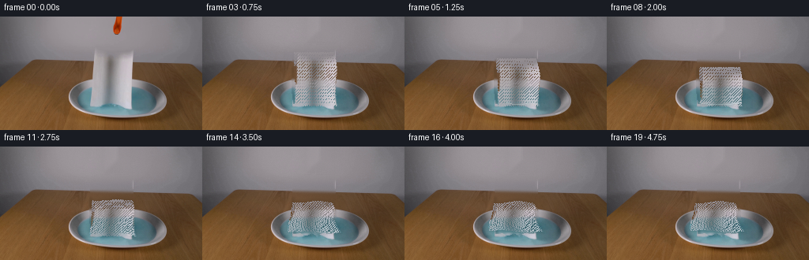
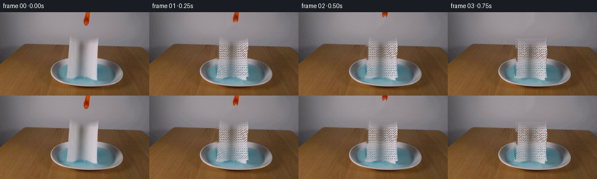
展开代码变化
--- 上一保存版本
+++ 本次保存版本
@@ -83,20 +83,16 @@
def extract_sheet(source):
- x0, x1, y0, y1 = 108, 178, 35, 117
+ x0, x1, y0, y1 = 114, 168, 38, 110
crop = source[y0:y1, x0:x1].copy()
h, w = crop.shape[:2]
yy, xx = np.mgrid[y0:y1, x0:x1]
- # Boundary of the hanging sheet in the reference image.
- left = np.interp(yy, [35, 39, 60, 82, 104, 116], [116, 116, 114, 113, 114, 120])
- right = np.interp(yy, [35, 39, 60, 82, 104, 116], [166, 166, 169, 170, 170, 166])
- bottom = np.interp(xx, [113, 122, 132, 142, 153, 164, 172],
- [110, 113, 108, 114, 108, 112, 109])
- inside = (xx >= left) & (xx <= right) & (yy >= 39) & (yy <= bottom)
- alpha = inside.astype(np.float32)
- alpha = cv2.GaussianBlur(alpha, (3, 3), 0.45)
- alpha = np.clip((alpha - 0.12) / 0.76, 0, 1)
+ # A clean rectangular swatch from the paper's interior. The animated mesh
+ # supplies the silhouette, so the source matte needs no noisy edge pixels.
+ crop[:2] = crop[2]
+ crop[-2:] = crop[-3]
+ alpha = np.ones((h, w), np.float32)
return crop, alpha.astype(np.float32)
@@ -159,12 +155,12 @@
U, V = np.meshgrid(u, v)
# Vertical travel: a quick release followed by a softer landing.
- drop = 1.2 + 4.0 * smoothstep(0.04, 0.27, t) + 17.0 * smoothstep(0.10, 0.46, t)
+ drop = 1.0 + 5.0 * smoothstep(0.02, 0.26, t) + 20.0 * smoothstep(0.08, 0.48, t)
settle = smoothstep(0.30, 0.82, t)
collapse = smoothstep(0.34, 0.78, t)
- y_top = 38.5 + drop + 8.0 * settle
- height = 73.0 * (1.0 - 0.55 * collapse) + 4.0 * np.sin(np.pi * settle)
+ y_top = 37.5 + drop + 6.0 * settle
+ height = 72.0 * (1.0 - 0.48 * collapse) + 4.0 * np.sin(np.pi * settle)
# The sheet bends and twists as it loses support, then relaxes across the liquid.
sway = (2.4 * np.sin(1.25 * np.pi * t + 0.15) * smoothstep(0.08, 0.55, t)
@@ -172,8 +168,8 @@
center = 142.0 + sway + (V - 0.5) * (2.2 * np.sin(1.7 * np.pi * t) * (1 - collapse))
center += 1.2 * np.sin(2.0 * np.pi * V + 0.6) * settle
- width_top = 50.0 * (1.0 - 0.05 * collapse)
- width_bottom = 55.0 + 12.0 * settle - 4.0 * collapse
+ width_top = 52.0 * (1.0 - 0.04 * collapse)
+ width_bottom = 54.0 + 18.0 * settle - 5.0 * collapse
width = (width_top + (width_bottom - width_top) * V)
width *= 1.0 + 0.035 * np.sin(2.0 * np.pi * (1.25 * V + 0.15 * t))
候选 06播放与检查图
点击播放 · 原生 RGB 像素

展开代码变化
--- 上一保存版本
+++ 本次保存版本
@@ -41,43 +41,34 @@
cv2.fillPoly(mask, [polygon], 255)
mask = cv2.dilate(mask, np.ones((3, 3), np.uint8), iterations=1)
- restored = cv2.inpaint(cv2.cvtColor(image, cv2.COLOR_RGB2BGR), mask, 3, cv2.INPAINT_TELEA)
- restored = cv2.cvtColor(restored, cv2.COLOR_BGR2RGB).astype(np.float32)
-
- # The wall and tabletop are smooth horizontal gradients. Rebuild those rows
- # from the nearest visible samples so the inpainter does not leave a stripe.
- for y in range(0, 64):
+ # Reconstruct each hidden row from its two visible neighbors. This avoids
+ # the radial smearing produced by a generic inpaint around the curved rim.
+ restored = image.astype(np.float32)
+ for y in range(H):
xs = np.flatnonzero(mask[y])
if not len(xs):
continue
- left = max(0, int(xs.min()) - 2)
- right = min(W - 1, int(xs.max()) + 2)
+ xl = max(0, int(xs.min()) - 2)
+ xr = min(W - 1, int(xs.max()) + 2)
+ left_color = image[y, max(0, xl - 2):xl + 1].mean(axis=0)
+ right_color = image[y, xr:xr + 3].mean(axis=0)
+ if y >= 86:
+ # Keep the liquid's blue channel dominant after interpolation.
+ left_color = left_color * np.array([0.86, 0.98, 1.03])
+ right_color = right_color * np.array([0.90, 0.98, 1.02])
for x in xs:
- t = (x - left) / max(right - left, 1)
- restored[y, x] = image[y, left] * (1 - t) + image[y, right] * t
-
- # Around the dish, use the scene's bilateral symmetry for rim and water
- # texture, then fall back to the inpainted center where both sides are hidden.
- center_x = 142.5
- for y in range(64, 116):
+ t = (x - xl) / max(xr - xl, 1)
+ t = t * t * (3 - 2 * t)
+ restored[y, x] = left_color * (1 - t) + right_color * t
+
+ # Fine vertical variation keeps the water from looking like a flat fill.
+ for y in range(86, 111):
xs = np.flatnonzero(mask[y])
if not len(xs):
continue
- left = max(0, int(xs.min()) - 2)
- right = min(W - 1, int(xs.max()) + 2)
- for x in xs:
- xm = int(round(2 * center_x - x))
- if 0 <= xm < W and not mask[y, xm]:
- restored[y, x] = image[y, xm]
- else:
- t = (x - left) / max(right - left, 1)
- restored[y, x] = image[y, left] * (1 - t) + image[y, right] * t
-
- # A light local blur removes the mirror seam without erasing the dish edge.
- smooth = cv2.GaussianBlur(restored, (0, 0), 1.4)
- edge = cv2.GaussianBlur(mask.astype(np.float32), (0, 0), 0.8)[..., None]
- edge = np.clip(edge * 0.75, 0, 1)
- out = np.clip(restored * (1 - edge) + smooth * edge, 0, 255).astype(np.uint8)
+ restored[y, xs] += 1.4 * np.sin(xs * 0.16 + y * 0.24)[:, None]
+
+ out = np.clip(restored, 0, 255).astype(np.uint8)
out[mask == 0] = image[mask == 0]
return out, mask
候选 07播放与检查图
候选 08播放与检查图
点击播放 · 原生 RGB 像素

展开代码变化
--- 上一保存版本
+++ 本次保存版本
@@ -52,21 +52,36 @@
xr = min(W - 1, int(xs.max()) + 2)
left_color = image[y, max(0, xl - 2):xl + 1].mean(axis=0)
right_color = image[y, xr:xr + 3].mean(axis=0)
- if y >= 86:
- # Keep the liquid's blue channel dominant after interpolation.
- left_color = left_color * np.array([0.86, 0.98, 1.03])
- right_color = right_color * np.array([0.90, 0.98, 1.02])
for x in xs:
t = (x - xl) / max(xr - xl, 1)
t = t * t * (3 - 2 * t)
restored[y, x] = left_color * (1 - t) + right_color * t
- # Fine vertical variation keeps the water from looking like a flat fill.
- for y in range(86, 111):
+ # Rebuild the hidden liquid with the blue field visible at the dish edges.
+ # Sampling only blue pixels avoids pulling the white ceramic rim inward.
+ rgb = image.astype(np.float32)
+ for y in range(87, 113):
xs = np.flatnonzero(mask[y])
if not len(xs):
continue
- restored[y, xs] += 1.4 * np.sin(xs * 0.16 + y * 0.24)[:, None]
+ visible = np.arange(90, 210)
+ blue = (rgb[y, visible, 2] > rgb[y, visible, 0] + 12) & (rgb[y, visible, 1] > 95)
+ samples = rgb[y, visible[blue]]
+ if len(samples) >= 3:
+ water_color = np.median(samples, axis=0)
+ else:
+ water_color = np.array([91.0, 150.0, 163.0], np.float32)
+ # A gentle vertical lighting gradient matches the curved liquid surface.
+ q = np.clip((y - 87) / 25.0, 0, 1)
+ water_color += np.array([8.0, 7.0, 6.0]) * q
+ xs_arr = xs.astype(np.float32)
+ variation = 1.2 * np.sin(xs_arr * 0.17 + y * 0.31)
+ restored[y, xs] = water_color + variation[:, None] * np.array([0.35, 0.5, 0.55])
+
+ # Feather the reconstruction into the real image over one pixel so the
+ # repaired center does not show a cutout edge.
+ alpha = cv2.GaussianBlur(mask.astype(np.float32), (0, 0), 0.75)[..., None]
+ restored = image.astype(np.float32) * (1 - alpha) + restored * alpha
out = np.clip(restored, 0, 255).astype(np.uint8)
out[mask == 0] = image[mask == 0]
候选 09播放与检查图
候选 10播放与检查图
点击播放 · 原生 RGB 像素
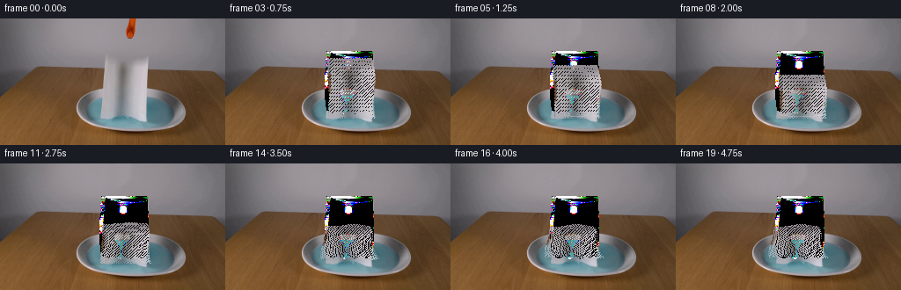
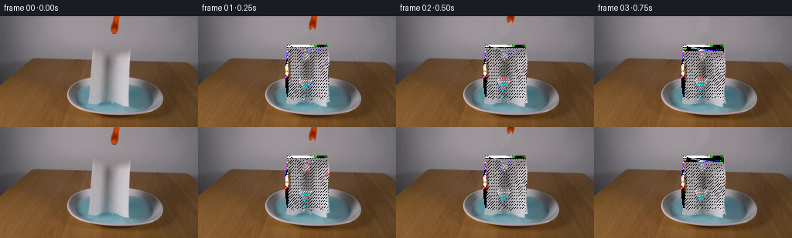
展开代码变化
--- 上一保存版本
+++ 本次保存版本
@@ -30,12 +30,12 @@
grip_alpha = grip_mask.astype(np.float32)[..., None] / 255.0
image = np.clip(image * (1 - grip_alpha) + wall * grip_alpha, 0, 255).astype(np.uint8)
- # The sheet mask follows its actual silhouette, with a one-pixel feather.
+ # Remove only the towel; the dish underneath is rebuilt separately below.
mask = np.zeros((H, W), np.uint8)
polygon = np.array(
- [[116, 38], [166, 38], [167, 70], [168, 92], [166, 108],
- [159, 109], [152, 107], [145, 111], [138, 108], [131, 111],
- [124, 108], [116, 109], [114, 92], [114, 70]],
+ [[116, 38], [166, 38], [167, 70], [167, 88], [165, 103],
+ [159, 106], [153, 103], [147, 107], [141, 103], [135, 107],
+ [129, 103], [122, 106], [116, 103], [114, 88], [114, 70]],
np.int32,
)
cv2.fillPoly(mask, [polygon], 255)
@@ -58,7 +58,8 @@
restored[y, x] = left_color * (1 - t) + right_color * t
# Rebuild the hidden liquid with the blue field visible at the dish edges.
- # Sampling only blue pixels avoids pulling the white ceramic rim inward.
+ # The dish interior is a broad ellipse; below its top rim there is liquid,
+ # while the front rim is sampled from the matching visible ceramic band.
rgb = image.astype(np.float32)
for y in range(87, 113):
xs = np.flatnonzero(mask[y])
@@ -77,6 +78,22 @@
xs_arr = xs.astype(np.float32)
variation = 1.2 * np.sin(xs_arr * 0.17 + y * 0.31)
restored[y, xs] = water_color + variation[:, None] * np.array([0.35, 0.5, 0.55])
+
+ # Restore the bright ceramic front rim where the sheet touched it.
+ for y in range(103, 113):
+ xs = np.flatnonzero(mask[y])
+ if not len(xs):
+ continue
+ row = image[y].astype(np.float32)
+ ceramic = (row.mean(axis=1) > 135) & (row.max(axis=1) - row.min(axis=1) < 30)
+ samples = row[ceramic]
+ if len(samples):
+ rim_color = np.median(samples, axis=0)
+ else:
+ rim_color = np.array([203.0, 201.0, 207.0], np.float32)
+ # Only the lower portion of each repaired row belongs to the rim.
+ lip = np.clip((y - 105) / 5.0, 0, 1)
+ restored[y, xs] = restored[y, xs] * (1 - lip) + rim_color * lip
# Feather the reconstruction into the real image over one pixel so the
# repaired center does not show a cutout edge.
可观测工具轨迹
实际执行的命令与返回图片。
命令 1exit 0
/bin/bash -c "pwd && rg --files -g 'prompt.txt' -g 'GENERATION_RULES.md' -g '"'!*.mp4'"' -g '"'!*.webm'"'"
命令 2exit 0
/bin/bash -c 'ls -la'
命令 3exit 0
/bin/bash -c 'cat prompt.txt'
命令 4exit 0
/bin/bash -c 'cat GENERATION_RULES.md'
命令 5exit 0
/bin/bash -c "sed -n '1,240p' artifact_io.py"
命令 6exit 0
/bin/bash -c "sed -n '1,260p' player_template.html"
命令 7exit 0
/bin/bash -c "python - <<'PY'
from PIL import Image
im=Image.open('first_frame.png')
print(im.mode, im.size)
PY"命令 8exit 0
/bin/bash -c "python - <<'PY' mods=['cv2','scipy','numpy','PIL','skimage'] for m in mods: try: x=__import__(m); print(m, getattr(x,'__version__','ok')) except Exception as e: print(m,'NO',e) PY"
命令 9exit 0
/bin/bash -c "python - <<'PY'
from PIL import Image
im=Image.open('first_frame.png')
im.crop((80,0,190,130)).resize((660,780)).save('.tmp/crop_center.png')
im.resize((1024,576)).save('.tmp/first_up.png')
PY"命令 10exit 0
/bin/bash -c "python - <<'PY'
from PIL import Image
im=Image.open('first_frame.png')
for box,name in [((95,40,180,122),'towel'),((80,65,220,125),'plate'),((130,0,160,30),'grab'),((0,0,256,70),'bg')]:
im.crop(box).resize(((box[2]-box[0])*6,(box[3]-box[1])*6)).save(f'.tmp/{name}.png')
PY"命令 11exit 0
/bin/bash -c "python - <<'PY'
from PIL import Image
import numpy as np
im=np.array(Image.open('first_frame.png'))
pts=[(128,10),(128,30),(128,40),(128,50),(128,60),(128,80),(128,95),(128,105),(128,110),(128,115),(140,95),(110,100),(190,100),(128,125),(60,80),(230,80),(0,0),(100,60)]
for x,y in pts: print((x,y), im[y,x])
PY"命令 12exit 0
/bin/bash -c "python - <<'PY'
from PIL import Image
import numpy as np
im=np.array(Image.open('first_frame.png'))
for y in [60,65,70,75,80,85,90,95,100,105,110,115,120]:
print('y',y, [(x,tuple(im[y,x])) for x in [80,85,90,95,100,105,110,115,120,125,130,135,140,145,150,155,160,165,170,175,180,185,190,195,200,205,210,215,220]])
PY"命令 13exit 0
/bin/bash -c 'python generate.py'
命令 14exit 0
/bin/bash -c "python - <<'PY'
from PIL import Image
im=Image.open('first_frame.png')
im.crop((75,65,215,135)).resize((1120,560)).save('.tmp/plate_big.png')
PY"命令 15exit 0
/bin/bash -c "python - <<'PY'
from PIL import Image
im=Image.open('first_frame.png')
im.crop((100,35,180,118)).resize((800,830)).save('.tmp/sheet_big.png')
PY"命令 16exit 0
/bin/bash -c 'python generate.py'
命令 17exit 0
/bin/bash -c "python - <<'PY'
from PIL import Image
import numpy as np
im=np.array(Image.open('first_frame.png'))
# print mask candidate and components
rgb=im.astype(float)
for y in [35,36,37,38,39,40,45,50,60,70,80,90,100,105,108,110,112,114,116]:
print(y,[(x,tuple(im[y,x])) for x in range(105,181,5)])
PY"命令 18exit 0
/bin/bash -c "python - <<'PY'
from PIL import Image
import numpy as np
im=np.array(Image.open('first_frame.png'))
# nearest boundary transitions by row and sample segments
for y in [39,40,42,45,50,55,60,65,70,75,80,85,88,90,92,95,98,100,102,104,106,108,110,112,114,116]:
row=im[y].astype(float)
chrom=row.max(1)-row.min(1)
# candidate paper: gray-ish bright
cand=(chrom<45)&(row.mean(1)>70)
# runs
runs=[]; s=None
for x,v in enumerate(cand):
if v and s is None:s=x
if s is not None and (not v or x==255):
e=x if v else x-1
if e-s>=3:runs.append((s,e))
s=None
print(y,runs)
PY"命令 19exit 0
/bin/bash -c "python - <<'PY'
import cv2,numpy as np
from PIL import Image
im=np.array(Image.open('first_frame.png'))
h,w=im.shape[:2]
mask=np.zeros((h,w),np.uint8)
poly=np.array([[116,38],[166,38],[167,70],[167,92],[167,108],[160,110],[154,108],[148,111],[142,108],[136,111],[130,108],[124,111],[115,109],[114,90],[114,70]],np.int32)
cv2.fillPoly(mask,[poly],255)
mask=cv2.dilate(mask,np.ones((3,3),np.uint8),iterations=1)
bgr=cv2.cvtColor(im,cv2.COLOR_RGB2BGR)
for name,flag in [('telea',cv2.INPAINT_TELEA),('ns',cv2.INPAINT_NS)]:
out=cv2.inpaint(bgr,mask,3,flag)
out=cv2.cvtColor(out,cv2.COLOR_BGR2RGB)
Image.fromarray(out).save(f'.tmp/bg_{name}.png')
PY"命令 20exit 0
/bin/bash -c "python - <<'PY'
from PIL import Image
import numpy as np
src=np.array(Image.open('first_frame.png'))
out=np.array(Image.open('.tmp/bg_telea.png'))
# print differences and exact line values
for y in [38,40,45,50,60,70,80,88,92,96,100,104,108,112,116]:
print('y',y)
print('src',[(x,src[y,x].tolist()) for x in [112,114,116,120,128,136,142,148,156,164,167,170]])
print('out',[(x,out[y,x].tolist()) for x in [112,114,116,120,128,136,142,148,156,164,167,170]])
PY"命令 21exit 0
/bin/bash -c "python - <<'PY'
from PIL import Image
import numpy as np
src=np.array(Image.open('first_frame.png'))
# extract exact central paper rectangle x=116:166, y=60:88, reconstruct whole sheet by reflection/mirror
paper=src[40:108,116:167].copy()
# expand 70x68 to texture 90x82 with edge padding + mirror
tex=np.pad(paper,((4,10),(8,12),(0,0)),mode='symmetric')
Image.fromarray(tex).save('.tmp/sheet_rect.png')
print(tex.shape)
PY"命令 22exit 0
/bin/bash -c 'python generate.py'
命令 23exit 0
/bin/bash -c "python - <<'PY'
from PIL import Image
im=Image.open('first_frame.png')
im.crop((105,32,180,120)).resize((750,880)).save('.tmp/source_sheet.png')
PY"命令 24exit 0
/bin/bash -c 'python generate.py'
命令 25exit 0
/bin/bash -c 'python generate.py'
命令 26exit 0
/bin/bash -c "python - <<'PY'
from PIL import Image
import numpy as np
ims=[np.array(Image.open(f'frames/{i:02d}.png')).astype(float) for i in range(20)]
for i in range(19):
d=np.abs(ims[i+1]-ims[i]).mean()
n=np.count_nonzero(np.any(ims[i+1]"'!=ims[i],axis=2))
print(i, f'"'{d:.3f}',n)
PY"命令 27exit 0
/bin/bash -c 'python generate.py'
命令 28exit 0
/bin/bash -c 'python generate.py'
命令 29exit 0
/bin/bash -c "python - <<'PY'
from pathlib import Path
from PIL import Image
import numpy as np, json, re
src=np.array(Image.open('first_frame.png').convert('RGB'))
frame0=np.array(Image.open('frames/00.png').convert('RGB'))
z=np.load('pixels.npz')['pixels']
print('frame0 exact:', np.array_equal(src, frame0))
print('frames:', len(list(Path('frames').glob('*.png'))))
print('pixel tensor:', z.shape, z.dtype)
print('npz frame0 matches:', np.array_equal(z[:,:,0], (src[:,:,0].astype(np.uint32)<<16)|(src[:,:,1].astype(np.uint32)<<8)|src[:,:,2]))
html=Path('index.html').read_text()
print('player ready:', 'const DATA=' in html and 'window.__pixelReady=true' in html)
print('artifacts:', [(p.name,p.stat().st_size) for p in [Path('index.html'),Path('pixels.npz'),Path('inspection.png'),Path('transition_check.png')]])
PY"命令 30exit 0
/bin/bash -c 'ls -lh generate.py first_frame.png prompt.txt index.html pixels.npz inspection.png transition_check.png && git status --short 2>/dev/null || true'
视觉工具实际返回图片 1

视觉工具实际返回图片 2
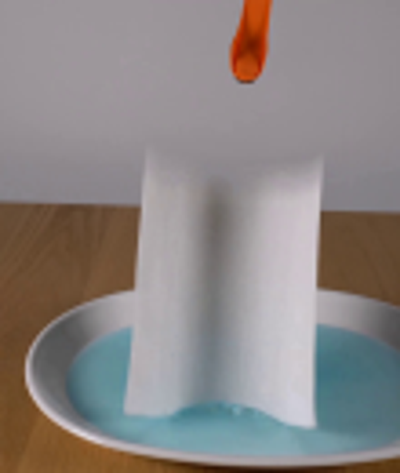
视觉工具实际返回图片 3
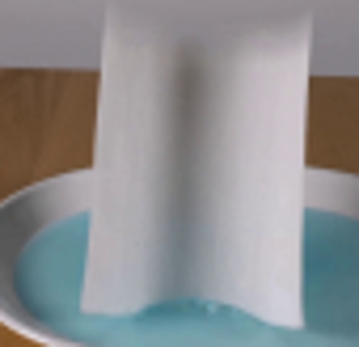
视觉工具实际返回图片 4

视觉工具实际返回图片 5

视觉工具实际返回图片 6
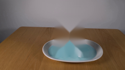
视觉工具实际返回图片 7
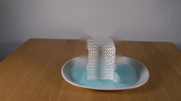
视觉工具实际返回图片 8
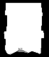
视觉工具实际返回图片 9
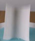
视觉工具实际返回图片 10
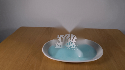
视觉工具实际返回图片 11
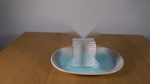
视觉工具实际返回图片 12
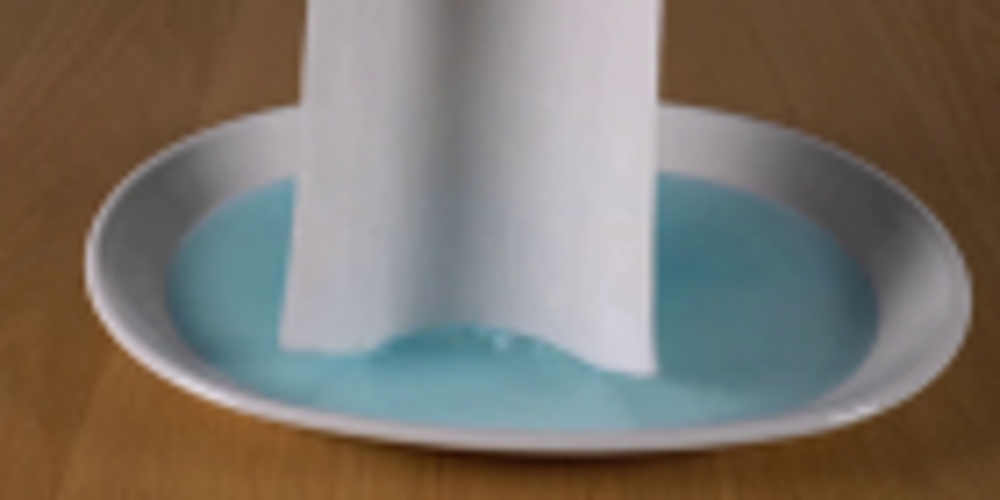
视觉工具实际返回图片 13
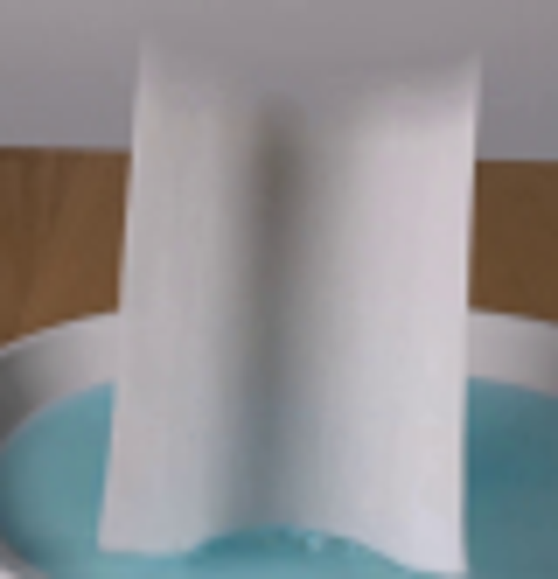
视觉工具实际返回图片 14

视觉工具实际返回图片 15
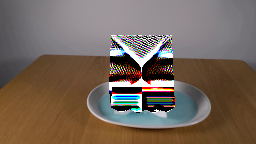
视觉工具实际返回图片 16
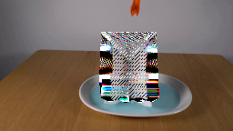
视觉工具实际返回图片 17
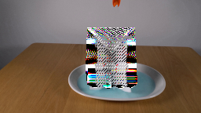
视觉工具实际返回图片 18
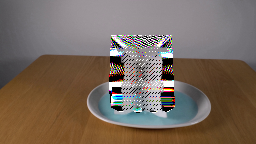
视觉工具实际返回图片 19
视觉工具实际返回图片 20
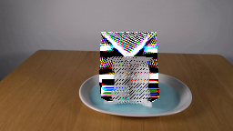
视觉工具实际返回图片 21
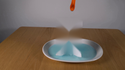
视觉工具实际返回图片 22
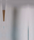
视觉工具实际返回图片 23

视觉工具实际返回图片 24
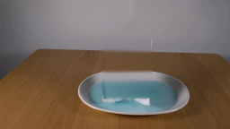
视觉工具实际返回图片 25
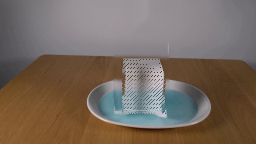
视觉工具实际返回图片 26
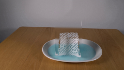
视觉工具实际返回图片 27
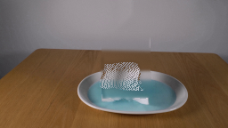
视觉工具实际返回图片 28
视觉工具实际返回图片 29
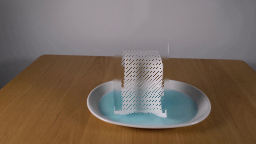
视觉工具实际返回图片 30
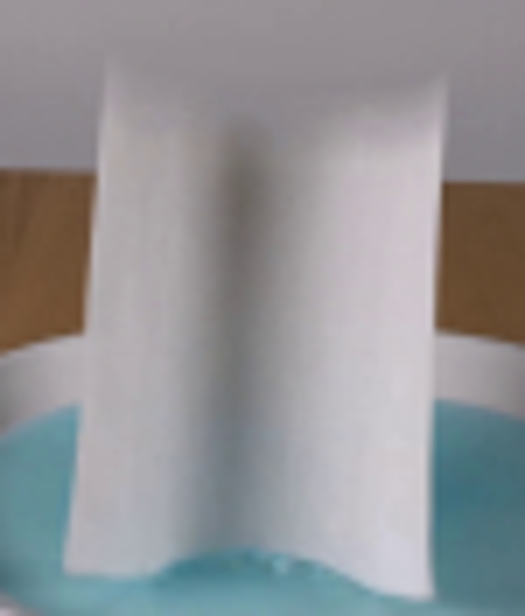
视觉工具实际返回图片 31

视觉工具实际返回图片 32

视觉工具实际返回图片 33
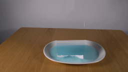
视觉工具实际返回图片 34
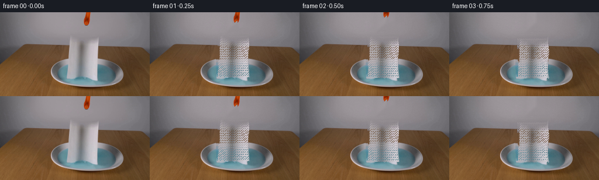
视觉工具实际返回图片 35
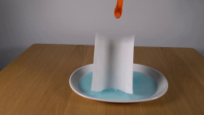
视觉工具实际返回图片 36
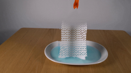
视觉工具实际返回图片 37

视觉工具实际返回图片 38
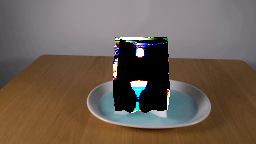
视觉工具实际返回图片 39
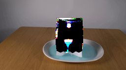
视觉工具实际返回图片 40

保存候选 10 份；完成命令 30 次；可验证图片返回 40 张。原始 API 响应与完整日志保留在本地。